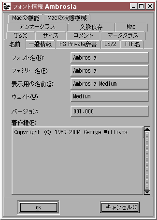

チュートリアル

私に美学を教える能力があるとは思いません。ここでは機能のみに集中します。
(このチュートリアル (英語版) は PDF 版でも入手可能です)
- フォントの作成
- グリフの作成 (アウトラインのトレース) 法
- 他のグリフの呼び出し方
- 次のグリフに関して (矛盾のないパスの向き)
- 統一のとれたセリフとステムの太さ
- アクセントつきグリフの組み立て方
- 合字の組み立て方
- メトリックの確認法
- カーニング
- 異体関係にあるグリフ
- アンカーマーク
- 条件つき機能
- フォントのチェック法
- ビットマップ
- フォントの出力方法
- フォントファミリー
- 最後のまとめ
- スクリプト処理のチュートリアル
- 各種の用字系における注意点
貴族: これだよ、職人わざというのは。美しい書物以上に精緻をきわめたものはまたとあるまい。美しい縁どりに収められた漆黒の文字の見事な配列、巧みに挿入された色刷りの絵。ところがこの頃の人間は、書物を眺めようとせず、読んでばかりいる。これでは書物も、いま君が書きなぐっているベーコンや魚の注文伝票と、なんの変わりもありはしない。
—『聖女ジョウン』第四場
ジョージ・バーナード・ショー, 1924 年
(中川龍一・小田島雄志訳)
フォントの作成
まず、フォントを ファイル(F) メニューの 新規(N) コマンドで (または、起動時に引数 -new を指定して) 作成します。

フォントには エレメント(L) メニューの フォント情報(F)... コマンドで名前をつけてください。このコマンドは他にも、著作権表示を設定したり高さ (ascent)・深さ (descent) を設定するのに使えます。高さと深さ、2 つの値の合計はフォントの全角正方形 (em square) を決定します。一般には PostScript フォントでは 1000, TrueType フォントでは 2 の冪乗 (多くは 2048 か 4096), Ikarus フォントでは 15000 です。(もし TrueType を作る予定ならば、2 次スプライン(Q) チェックボックスをオンにして、TrueType フォーマットそのもので編集した方がいいかもしれません。ただし、このモードでは編集が少し難しくなります)

フォント内でどの文字が利用できるかを変更したい場合は、エンコーディング(N)→エンコーディング変換(R) を使用することができます。特に設定していなければ、FontForge は新しいフォントを ISO-8859-1 で作成します。このエンコーディングには、西ヨーロッパで必要とされる (ほとんどの) 文字 (ラテン文字、いくつかのアクセントつき文字、数字および記号) が含まれています。
グリフの作成法
それが終わったら、文字の編集を始める用意ができています。上のフォントビューの“C”の項目をダブルクリックして下さい。空の文字アウトラインウィンドウが表示されます。

このアウトライングリフウィンドウの左端には、2 個のパレットが埋め込まれています。上のパレットは編集ツールの一覧を含み、下のパレットはウィンドウのどのレイヤが見え、どれが編集可能かを制御しています。
前面レイヤはフォントの部品となるアウトラインを含んでいます。背面レイヤはこの特定のグリフを描画する補助となる画像または描線を含んでいます。ガイドレイヤはフォントごとの基準として役立つ線 (x ハイトなど) を含んでいます。今のところ、全てのレイヤは空です。
このウィンドウには、グリフの内部座標系が x 軸と y 軸とともに薄い灰色で示されています。グリフの送り幅 (advance width) を示す線が黒で、ウィンドウの右端に描かれています。FontForge は、新規に作るグリフの送り幅としては、1 em の幅を割り当てます (PostScript では、これは通常 1000 ユニットです)。
ファイル(F) メニューから 取り込み(I)... コマンドを選び、あなたが作成したグリフの画像を取り込んでください。グリフの高さが全角正方形 (em-square) に一致するように拡大/縮小されます。

レイヤパレットで背面レイヤを選択して、編集可能な状態にします。マウスポインタを画像の端のどこかに合わせ、シフトキーを押しながら隅をクリックし、画像が適切なサイズになるまでドラッグします。そののち、ポインタを画像の暗色の部分に載せてマウスボタンを押下し、画像が適切な位置に来るまでドラッグします。

もしあなたが autotrace プログラムをダウンロード済みならば、エレメント(L)→自動トレース(R) で画像からアウトラインを生成することができます。しかし、インストールしていない場合は自分で点を追加しなければなりません。前面をアクティブレイヤに変更してから、ツールパレットで丸い (曲線上の) 点を選択します。その後でポインタを画像の縁に移し、点を追加します。私の経験では、曲線が水平または垂直になっている点や、角、そして変曲点 (曲率方向の変化は、S 字形の曲線が、右側に開いた部分から左側から開いた部分へ移るところで起こります) に点を追加するのが最良です。この方針に従えば、ヒント処理がより適切に働くようになるでしょう。

曲線は時計回りに入力していくのが最善です。そうすれば、次の点は、画像の上端の平らな部分に追加されます。輪郭線がそこで直線にさしかかるので、曲線上の点は不適切で、(曲線と直線の) 接点 (ツールパレット上では小さな三角形のように見えます) のほうが適切です。接点は曲線から直線への美しい移り変わりを形づくります。これは、その点における曲線の傾きが、引き続く直線が入力された時の傾きと同じに保たれるからです。

今のところこの「曲線」は画像と全く一致していません。後で修正しますし、作業を続けるに従っていずれにしろ変形するのでこれは気にせず続けてください。制御点が接点 (小さな青い×印) につながっていることに注意してください。画像で輪郭の方向が突然変化している箇所に次の点を置かなければなりません。曲線上の点も接点も不適切ですから、角の点 (ツールパレット上の小さな四角の一つ) を使用しなくてはなりません。

図に見るように、先ほどの曲線はわずかながら前より密接に画像に沿っています。 パスが閉じる直前のところまで、点の追加を続けましょう。

その後、以前の開始点の上に重ねて新しく点を追加すれば、それでパスは閉じます。

ここで、曲線が画像をより正確にたどるようにする必要がありますが、そのためには制御点 (青い×印) を調整する必要があります。 全ての制御点が見えるようにするため、ポインタツールを選んで曲線上でダブルクリックし、それから曲線が画像と同じ形になるように制御点を動かします。

最後に幅を設定します。ポインタツールに戻り、マウスを画面の右端にある字幅線に合わせてクリックし、文字幅が適切な位置に来るまでドラッグして戻します。

これでこのグリフについては完成です。
もしあなたが数学に興味のある性格ならば、FontForge がウィンドウの左上に表示する座標値に興味を持たれたことでしょう。一般にはこれらの値を気にしなくても非常に快適にグリフを描画することができますが、興味をお持ちの方のために基本的な情報を提供しておきます:
- 各グリフはそれ自身の座標系をもっています。
- 垂直方向の原点はフォントのベースライン (ほとんどのラテン文字が載っかっている線) の上にあります。
- 水平方向の原点が、グリフの描画が開始される基準位置です。上の例では、最初に描画されるのは空っぽの空間ですが、これは非常によくあることで、この空っぽの空間 (原点からグリフの左端までの距離) を左サイドベアリングと呼びます。
- 座標系の単位はフォントの em サイズにより決まります。これはフォントの高さと深さ の和です。上の例ではフォントの高さは 800 で、深さは 200 です。そして高さの基準線 (“C”の最上部のすぐ上にある線) はベースラインから 800 ユニット離れており、深さの基準線は 200 ユニット下にあります。
-
ですから、(上の図の)
282,408という位置は、カーソルが水平方向の原点から 282 ユニット右に、ベースラインから 408 ユニット上に (すなわち、上端と下端のほぼ中間に) ある ということを意味しています。